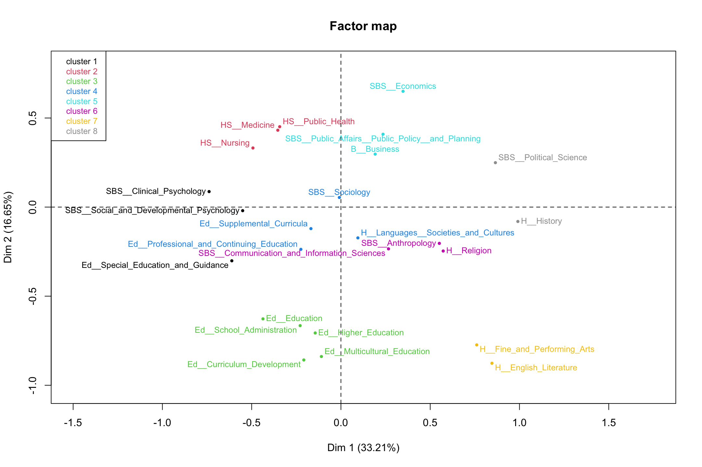
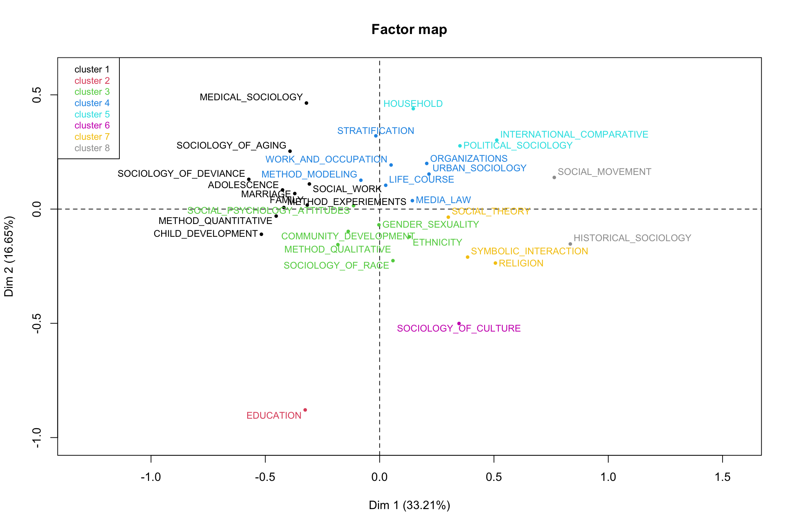

12, Part 2. Cultural Spaces
This is the second tutorial for Chapter 12, covering the application of network ideas to cultural data. In this tutorial we cover spatial approaches to analyzing cultural data, which offer a useful, 'birds-eye' view of the system in question. Methods like multi-dimensional scaling and correspondence analysis produce a map of the data, showing which objects cluster together and which do not. We will mostly cover correspondence analysis, which is a method for placing multiple types of objects into the same latent space. Correspondence analysis is thus ideally suited for two-mode data and for capturing ideas of duality. This tutorial thus builds directly on the material covered in Chapter 11.
Our substantive case is based on the dissertation topics of PhD students in sociology and related disciplines. See Chapter 12, Part 1 for an analysis of the abstracts themselves. Here, we have data on the topic and department of students who submitted a dissertation between 1990 and 2013 (limited to topics typically studied by sociologists). Our main question is how students in different departments fall into different topics and what structures this relationship. We also want to know which topics are 'close' to which other topics (where topics are close if they are covered by the same kinds of departments) and which departments are close to which other departments (where departments are close if they cover the same kinds of topics). We want to understand the department/topic structure in a holistic manner, capturing the department-department, topic-topic and department-topic relationships simultaneously. It is important to recognize that the data are not network data per se (just counts of people in departments and topics) but we will analyze such data from a relational, network perspective, applying ideas of duality, position, distance and the like.
12.4 Correspondence Analysis
Let's start by loading some useful packages.
library(FactoMineR)
library(factoextra)
library(CAinterprTools)
library(gplots)
library(plot3D)
library(NbClust)Now we will read in the data.
url1 <- "https://github.com/JeffreyAlanSmith/Integrated_Network_Science/raw/master/data/department_topic_data.txt"
department_topic <- read.table(file = url1, header = T)Let's take a look at the data (here just for the first 4 rows and columns).
department_topic[1:4, 1:4]## LIFE_COURSE SOCIOLOGY_OF_DEVIANCE SOCIOLOGY_OF_RACE MEDICAL_SOCIOLOGY
## SBS__Sociology 742 715 445 525
## H__Languages__Societies_and_Cultures 80 103 136 51
## SBS__Social_and_Developmental_Psychology 75 165 63 33
## H__History 49 7 47 12The rows correspond to the department of the student (with the prefix corresponding to department type: SBS is social behavioral sciences; H is humanities; Ed is the education school; B is business; HS is health sciences). The columns correspond to the main topic of the dissertation. The values are the number of people in that department and topic. So 742 students submitted a dissertation on the life course and were in a sociology department.
dim(department_topic)## [1] 25 33We have 25 departments and 33 topics. Lets grab the department and topic names, as this will be useful later on.
department_names <- rownames(department_topic)
topic_names <- colnames(department_topic)We will start with a basic correspondence analysis (CA) to get a sense of what these analyses yield. For a quick primer on correspondence analysis, see (Sourial et al. 2009).
Correspondence analysis will place both the rows (departments) and the columns (topics) into the same space. Departments, for example, will be close together if students from those departments cover the same kinds of topics; i.e., they are structurally equivalent (see Chapter 10). [More formally, correspondence analysis works by taking chi-square distances between rows/columns (i.e., a weighted distance between rows based on the probabilities of falling into each column) and decomposing them into a smaller number of dimensions to create a plot where the distances between points approximates those raw chi-square distances.] The main function is CA(). The main argument is X, which sets the data frame of interest (here department_topic). We also set graph to FALSE as we do not want to plot anything here.
ca_mod1 <- CA(X = department_topic, graph = FALSE)ca_mod1## **Results of the Correspondence Analysis (CA)**
## The row variable has 25 categories; the column variable has 33 categories
## The chi square of independence between the two variables is equal to 20620.07 (p-value = 0 ).
## *The results are available in the following objects:
##
## name description
## 1 "$eig" "eigenvalues"
## 2 "$col" "results for the columns"
## 3 "$col$coord" "coord. for the columns"
## 4 "$col$cos2" "cos2 for the columns"
## 5 "$col$contrib" "contributions of the columns"
## 6 "$row" "results for the rows"
## 7 "$row$coord" "coord. for the rows"
## 8 "$row$cos2" "cos2 for the rows"
## 9 "$row$contrib" "contributions of the rows"
## 10 "$call" "summary called parameters"
## 11 "$call$marge.col" "weights of the columns"
## 12 "$call$marge.row" "weights of the rows"The output is a CA object containing the overall fit of the model (eig), the results for the columns (col) and the results for the rows (row). Note that by default up to 5 dimensions will be kept in the results. This can be changed using the ncp argument. Let's use a summary() function to take a look at the results. Here we will tell R to print 2 decimal places (using nb.dec), print the first five rows/columns (setting nbelements to 5) and print 3 dimensions (setting ncp to 3).
summary(ca_mod1, nb.dec = 2, nbelements = 5, ncp = 3)##
## Call:
## CA(X = department_topic, graph = FALSE)
##
## The chi square of independence between the two variables is equal to 20620.07 (p-value = 0 ).
##
## Eigenvalues
## Dim.1 Dim.2 Dim.3 Dim.4 Dim.5 Dim.6 Dim.7 Dim.8 Dim.9 Dim.10 Dim.11 Dim.12 Dim.13 Dim.14 Dim.15 Dim.16 Dim.17 Dim.18 Dim.19 Dim.20 Dim.21 Dim.22 Dim.23 Dim.24
## Variance 0.13 0.07 0.05 0.03 0.03 0.02 0.01 0.01 0.01 0.01 0.01 0.01 0.00 0.00 0.00 0.00 0.00 0.00 0.00 0.00 0.00 0.00 0.00 0.00
## % of var. 33.21 16.65 13.48 7.94 6.29 4.65 3.41 2.73 2.58 1.85 1.67 1.31 1.11 0.86 0.79 0.42 0.35 0.25 0.17 0.15 0.07 0.04 0.02 0.01
## Cumulative % of var. 33.21 49.87 63.35 71.29 77.58 82.23 85.64 88.37 90.95 92.80 94.47 95.77 96.89 97.74 98.53 98.95 99.30 99.55 99.72 99.87 99.94 99.97 99.99 100.00
##
## Rows (the 5 first)
## Iner*1000 Dim.1 ctr cos2 Dim.2 ctr cos2 Dim.3 ctr cos2
## SBS__Sociology | 3.39 | -0.01 0.03 0.01 | 0.05 2.26 0.45 | -0.01 0.04 0.01 |
## H__Languages__Societies_and_Cultures | 12.86 | 0.09 0.43 0.04 | -0.17 2.85 0.15 | 0.14 2.43 0.10 |
## SBS__Social_and_Developmental_Psychology | 27.21 | -0.55 12.96 0.63 | -0.02 0.03 0.00 | 0.25 6.36 0.13 |
## H__History | 46.28 | 0.99 25.41 0.73 | -0.08 0.34 0.00 | 0.18 2.11 0.02 |
## SBS__Clinical_Psychology | 28.00 | -0.74 12.66 0.60 | 0.09 0.35 0.01 | 0.40 9.07 0.18 |
##
## Columns (the 5 first)
## Iner*1000 Dim.1 ctr cos2 Dim.2 ctr cos2 Dim.3 ctr cos2
## LIFE_COURSE | 0.55 | 0.03 0.01 0.03 | 0.10 0.43 0.53 | -0.04 0.08 0.08 |
## SOCIOLOGY_OF_DEVIANCE | 18.69 | -0.57 6.89 0.49 | 0.13 0.71 0.03 | 0.40 8.13 0.24 |
## SOCIOLOGY_OF_RACE | 2.97 | 0.06 0.05 0.02 | -0.23 1.46 0.33 | 0.04 0.05 0.01 |
## MEDICAL_SOCIOLOGY | 21.03 | -0.32 1.55 0.10 | 0.46 6.49 0.21 | 0.14 0.73 0.02 |
## CHILD_DEVELOPMENT | 15.13 | -0.52 7.06 0.62 | -0.11 0.64 0.03 | 0.09 0.51 0.02 |These results are a bit hard to interpret but there is lots of useful information here. For example, the eigenvalue output tells us how much of the variance in the data is explained by 1, 2, 3, etc. dimensions. If we use two dimensions (for example) we could explain about 50% of the total variance. We will return to this later on. The row and column output includes (amongst other things) the locations of each department and topic, showing which departments/topics are close together. This is easier to see in a plot. We can plot the results using fviz_ca_biplot().
fviz_ca_biplot(ca_mod1)We can change some of the inputs to make it easier to interpret, here changing the size and color of the labels. We make departments orange and topics blue.
fviz_ca_biplot(ca_mod1, col.row = "orange", col.col = "steelblue",
labelsize = 3, repel = T) +
theme_minimal()Note that the plot only includes the first two dimensions, and that both topics and departments are included, with different colors as a means of differentiating the type of object. Departments are close to topics when those departments have a high proportion of their students doing those topics. For example, students in public health, nursing and medicine tend to take on topics related to medical sociology.
Substantively, what have we learned from the plot? First, we may be interested in the overall structure of the space, or the latent dimensions in our two dimensional plot. Looking at the x-axis, we see the far left is constituted by topics like child development and deviance and departments like clinical psychology. On the far right, we see topics like social movements and historical sociology and departments like political science and history. The left-right continuum thus runs from micro-level studies of adolescence to macro-level studies of politics and history. Looking at the y-axis, the bottom includes topics like culture and education and includes education and humanities departments. The top is constituted by topics like medical sociology and stratification and departments like economics and public policy. The y-axis thus runs (more or less) from culture to stratification/health. We thus have a two-dimensional space of micro to macro and culture to stratification.
Second, we may be interested in which topics/departments tend to cluster together. For example, the top left quadrant includes medical sociology topics and public health departments. We see sociology of aging close by, as well as topics related to stratification. We also see that some departments are closer together than others. Public health is closer to nursing and public policy than it is to English or history. This means that the topics that public health students tend to take on are very different than those in the humanities. It is worth noting that the college that these departments are affiliated with only sometimes predicts which department are close together. For example, the departments in the social behavioral sciences (SBS) are pretty spread out, all the way from the far left (social and developmental psychology) to the far right (political science). Thus, political science has more in common, topic wise, with history (in the humanities) than fellow social sciences like clinical psychology.
We can also clean the plot up a bit to focus on just the rows or just the columns. If we wanted to just have the rows on the plot we would use fviz_ca_row() (or fviz_ca_col() for just the columns):
fviz_ca_row(ca_mod1, col.row = "orange", labelsize = 3, repel = T) +
theme_minimal()12.5 Number of Dimensions
We have so far run an initial correspondence analysis and interpreted the results. Here we want to take a closer look at the analysis, to make sure we have the proper set of results. There are a number of issues we need to consider. First, we need to decide how many dimensions are sufficient to represent the space. This means we need to decide on the appropriate number of dimensions to use when interpreting the results. We need to balance fit (more dimensions) with ease of interpretation and presentation (fewer dimensions). Remember that the eigenvalues tell us how much each dimension contributes to explaining the total variance in the data. So let's start by looking at the eigenvalues for each dimension more closely.
eig <- get_eigenvalue(ca_mod1)eig## eigenvalue variance.percent cumulative.variance.percent
## Dim.1 1.332917e-01 33.212926405 33.21293
## Dim.2 6.683516e-02 16.653627519 49.86655
## Dim.3 5.410294e-02 13.481083156 63.34764
## Dim.4 3.185661e-02 7.937859321 71.28550
## Dim.5 2.524612e-02 6.290692990 77.57619
## Dim.6 1.867087e-02 4.652307510 82.22850
## Dim.7 1.368130e-02 3.409034054 85.63753
## Dim.8 1.095477e-02 2.729651666 88.36718
## Dim.9 1.036783e-02 2.583399490 90.95058
## Dim.10 7.408050e-03 1.845898466 92.79648
## Dim.11 6.710398e-03 1.672061276 94.46854
## Dim.12 5.237564e-03 1.305068324 95.77361
## Dim.13 4.471813e-03 1.114262479 96.88787
## Dim.14 3.433716e-03 0.855595118 97.74347
## Dim.15 3.153639e-03 0.785806937 98.52927
## Dim.16 1.680187e-03 0.418660133 98.94793
## Dim.17 1.422663e-03 0.354491571 99.30243
## Dim.18 9.880741e-04 0.246203022 99.54863
## Dim.19 6.808799e-04 0.169658023 99.71829
## Dim.20 6.083445e-04 0.151584047 99.86987
## Dim.21 2.616822e-04 0.065204580 99.93508
## Dim.22 1.465193e-04 0.036508898 99.97158
## Dim.23 8.747367e-05 0.021796222 99.99338
## Dim.24 2.656286e-05 0.006618791 100.00000By first inspection, the model would appear to perform okay with a small number of dimensions, although we may be concerned that the first 2 dimensions only explains about 50% of the variance (looking at column 3, cumulative.variance.percent). Let's produce a scree plot to make the comparisons clearer.
fviz_screeplot(ca_mod1)The y-axis shows the percent of total variance explained as we add a dimension and the x-axis shows the number of dimensions. We can see that additional variance explained seems to drop off after the third dimension, so there would appear to be diminishing returns to adding a fourth, fifth, etc. dimension. We may opt for a 2 or 3 dimensional solution based on the plot.
Another potentially useful approach is to apply the average rule heuristic, which chooses the number of dimensions by selecting all dimensions that explain more than the average dimension. The function is aver.rule() and the input is the raw data (not the CA object).
aver.rule(department_topic)The dashed line indicates the average variance explained and the bars show the percent variance explained for each dimension. The average rule would suggest a solution of 6 dimensions. But if we take a closer look we can see that dimensions 5 and 6 only add around 5% to the explained variance, a fairly low return on adding an entire dimension to the plot. So, we may think that the average rule tends to yield solutions with too many dimensions, at least in this case.
How about Malinvaud's test? This sequential test checks the significance of the remaining dimensions once the first k ones have been selected. The function is malinvaud() and the input is the raw data.
malinvaud(department_topic)## K Dimension Eigenvalue Chi-square df p-value p-class
## 1 0 dim. 1 1.332917e-01 20620.073926 768 0.000000e+00 p < 0.001
## 2 1 dim. 2 6.683516e-02 13771.543949 713 0.000000e+00 p < 0.001
## 3 2 dim. 3 5.410294e-02 10337.553643 660 0.000000e+00 p < 0.001
## 4 3 dim. 4 3.185661e-02 7557.744330 609 0.000000e+00 p < 0.001
## 5 4 dim. 5 2.524612e-02 5920.951870 560 0.000000e+00 p < 0.001
## 6 5 dim. 6 1.867087e-02 4623.806325 513 0.000000e+00 p < 0.001
## 7 6 dim. 7 1.368130e-02 3664.497077 468 0.000000e+00 p < 0.001
## 8 7 dim. 8 1.095477e-02 2961.551735 425 0.000000e+00 p < 0.001
## 9 8 dim. 9 1.036783e-02 2398.695543 384 1.039277e-287 p < 0.001
## 10 9 dim. 10 7.408050e-03 1865.996659 345 1.036095e-206 p < 0.001
## 11 10 dim. 11 6.710398e-03 1485.371030 308 3.065673e-153 p < 0.001
## 12 11 dim. 12 5.237564e-03 1140.590759 273 2.492875e-106 p < 0.001
## 13 12 dim. 13 4.471813e-03 871.484706 240 1.658228e-72 p < 0.001
## 14 13 dim. 14 3.433716e-03 641.722959 209 1.659357e-45 p < 0.001
## 15 14 dim. 15 3.153639e-03 465.298613 180 3.872782e-27 p < 0.001
## 16 15 dim. 16 1.680187e-03 303.264642 153 5.705095e-12 p < 0.001
## 17 16 dim. 17 1.422663e-03 216.936613 128 1.532274e-06 p < 0.001
## 18 17 dim. 18 9.880741e-04 143.840189 105 7.114028e-03 p < 0.01
## 19 18 dim. 19 6.808799e-04 93.072944 84 2.335258e-01 p > 0.05
## 20 19 dim. 20 6.083445e-04 58.089334 65 7.156535e-01 p > 0.05
## 21 20 dim. 21 2.616822e-04 26.832591 48 9.942444e-01 p > 0.05
## 22 21 dim. 22 1.465193e-04 13.387359 33 9.990331e-01 p > 0.05
## 23 22 dim. 23 8.747367e-05 5.859197 20 9.990747e-01 p > 0.05
## 24 23 dim. 24 2.656286e-05 1.364800 9 9.980310e-01 p > 0.05The last column of the table prints the significance level associated with that dimension. Lower p-values suggest the (scaled) eigenvalues are significantly different from 0, an indication that the dimension is worth including. The results don't appear to be that informative in this case, however, as all dimensions up to (but not including) 19 are significant (assuming a traditional .05 threshold).
Given our results, how many dimensions should we use? In this case the scree plot probably offers the most useful information, where a 2 or 3 dimensional solution is the most appropriate. Lets go ahead and take a look at that third dimension, to see what it adds to the story. Let's create a 3-d plot, focusing just on the departments. Let's first get the locations of our departments. We can find the locations under row and then coord of our CA object:
locs_department <- ca_mod1$row$coordNow, we will use a text3D() function to plot the departments in three dimensions. Note that there are a number of packages that will allow for 3d plotting, but here we utilize the functions in the plot3D package. The text3D() function has a number of possible arguments. The main arguments are x, y z, showing the locations of each label to be plotted. The labels argument shows what should be printed in each location. Here we set the locations based on the first three dimensions in our CA object and set the labels to the names of the departments, defined above. The rest of the arguments control the look and rotation of the plot.
text3D(x = locs_department[, "Dim 1"],
y = locs_department[, "Dim 2"],
z = locs_department[, "Dim 3"],
labels = department_names, col = "black", theta = 120, phi = 20,
xlab = "dim1", ylab = "dim2", zlab = "dim3", axes = T,
ticktype = "detailed", main = "Departments in 3 Dimensions",
cex = 0.75, bty = "g", d = 2, adj = 1, font = 1)The plot is somewhat hard to read in three dimensions, but if we look at the third (z) dimension, we can see that on one extreme we have higher education and administration and on the other end we have English and performing arts. Thus, dimension 3 basically separates some of the departments that are close together on dimension 2 (English and higher education) but unless we really think that distinction is crucial we may be able to get away with the simpler 2-d plot, especially as those departments are already pretty different on dimension 1.
12.6 Importance of Rows/Columns
So far we have been examining the quality of the whole model. It will also be useful to assess the specific objects (departments and topics) in terms of their contribution to the fit for each dimension. This can help us in interpreting the dimensions of the space, by showing which rows/columns are most important in fitting a given dimension. Higher values mean that the row is more important in defining that dimension (i.e. the locations of other departments are based on the extreme location of the given department). We can get a handy plot that will sort from high to low on each dimension. The function is fviv_contrib(). The arguments are X (the CA object), choice (either "row" or "column") and axes (dimension of interest). Here we plot the contribution of each row for the first dimension. We also change the size and angle of the axis labels to make them easier to read (using ggplot functions).
fviz_contrib(ca_mod1, choice = "row", axes = 1) +
theme(axis.text.x = element_text(size = 8.0, angle = 75))The red line represents the expected value if all rows contributed equally to the dimension. We can see that the first dimension is defined primarily by history, political science and the psychology departments. Rows that contribute a lot to the fit tend to be far from the center on the dimension of interest; in this case history and political science on the far right and psychology on the far left. This is consistent with our interpretation from above. Let's look at dimension 2:
fviz_contrib(ca_mod1, choice = "row", axes = 2) +
theme(axis.text.x = element_text(size = 8.0, angle = 75)) And the same thing for the columns:
fviz_contrib(ca_mod1, choice = "col", axes = 1) +
theme(axis.text.x = element_text(size = 8.0, angle = 75)) fviz_contrib(ca_mod1, choice = "col", axes = 2) +
theme(axis.text.x = element_text(size = 8.0, angle = 75)) Lets plot the 2-dimensional solution again, but shade the labels by the contribution to the overall fit (summed over the first two dimensions). This is accomplished by setting col.row and col.col to contrib. We also include a scale_color_gradient2() function to set how the color scale should look.
fviz_ca_biplot(ca_mod1, col.row = "contrib", col.col ="contrib",
labelsize = 3, repel = T) +
scale_color_gradient2(low = "white", mid = "steelblue",
high = "darkblue", midpoint = 8) +
theme_minimal()Looking at our figure, it is worth thinking about what it means to be in the center of the plot compared to the extremes on one of the dimensions. For example, sociology (department) and gender_sexuality (topic) are in the center, while political science and social movements are not. This would suggest that sociology PhDs tend to take on dissertations that span many of the topics in the field. Similarly, this means that individuals from a wide variety of disciplines study gender. On the other hand, social movements is not studied by a wide variety of departments while those in political science tend not to study a large number of (sociological) topics, focused mainly on social movements. We thus have distinctions between central, generalist departments/topics and those that occupy more peripheral, niche locations.
12.7 Hierarchical Clustering
To aid in interpretation, it may be useful to cluster the departments and topics into distinct, structurally equivalent sets, where departments (or topics) that are close together in the space are placed in the same cluster (they are structurally equivalent in the sense of having the same pattern of topics). This can make it easier to talk through the results, as we can start to identify particular regions of the space, and not just the dimensions making up the space. Here we will make use of hierarchical clustering (see also Chapter 10). We begin by calculating the distance matrix between objects, both topics and departments, based on the locations from the two dimensional solution. Let's first put locations for the departments and topics together into one data frame. We already have the locations for the departments, so lets just grab the locations for the topics:
locs_topic <- ca_mod1$col$coordAnd now we stack them with the locations of the departments using a rbind() function:
locs <- rbind(locs_department, locs_topic)We just want the locations for the first two dimensions, so lets subset the data.
locs <- locs[, 1:2]And now we create the distance matrix using the dist() function, setting the method to Euclidean. We will then fit a hierarchical clustering model to the distance matrix using hclust():
d <- dist(locs, method = "euclidean")
fit <- hclust(d, method = "ward.D2") We need to pick an optimal number of clusters before we can interpret the results. As in Chapter 10, we can make use of the functions in the NbClust package to help us make a choice. The function is NbClust(). In this case we just include the distance matrix as the main inputs (set using diss). We set distance to NULL and tell R to use the silhouette index as the criterion (there are a number of other choices we could have made).
clusters <- NbClust(data = NULL, diss = d, distance = NULL,
method = "ward.D2", index = c("silhouette")) clusters$Best.nc## Number_clusters Value_Index
## 8.0000 0.4649Under this criterion the optimal solution has 8 clusters. The specific clusters can be found under: clusters$Best.partition.
Note that both the topics and the departments are included in the same cluster, so it is a simultaneous clustering of rows/columns. Let's name the clusters in a useful way for the plot. Here we add the word cluster before the cluster number using a paste() function.
cluster_names <- paste("cluster", clusters$Best.partition, sep = "") And let's also put the department/topic names on the vector of clusters so we know what each value corresponds to.
names(cluster_names) <- names(clusters$Best.partition)And finally, let's split those out by rows and columns.
row_clusters <- cluster_names[department_names]
col_clusters <- cluster_names[topic_names]Now, let's go back and redo our 2-d plot but color the departments and topics by cluster.
fviz_ca_biplot(ca_mod1, col.row = row_clusters, col.col = col_clusters,
labelsize = 3, repel = T) +
theme_minimal()Our first impression is that the clusters align pretty well with the spatial layout. There are a few exceptions, where the department or topic is hard to fit (e.g., social theory or special education) but, on the whole, the clusters capture distinct regions of the larger field. We see an education cluster, a health cluster, a culture cluster, a psychology cluster and so on. In this way, we have two main dimensions (micro to macro; culture to stratification) but distinct regions (or niches) carved out within the larger space. These niches are constituted by both topic and department, so that a health cluster (cluster 4) is not merely the topic studied, but institutionally, the departments that tend to study it. Most illuminating from the cluster analysis, perhaps, is that the center of the figure splits into 2 clusters, divided between sets of 'core' sociology topics: first, we have a cluster including topics like gender and race/ethnicity (cluster 1); and second, we have a cluster containing topics like stratification and organizations (cluster 5).
Note that the clustering solution above is based on clustering objects in a joint space, both row and column objects. It might, however, be preferred to cluster the rows and columns separately (e.g., because we do not want to try and interpret the distance between row and column objects). Here we can rely on the functions from the FactoMineR package. We will start by rerunning the correspondence analysis but set ncp to 2 (indicating that only the first 2 dimensions will be retained in the output). We do this to be consistent with the hierarchical clustering analysis done above.
ca_mod2 <- CA(department_topic, ncp = 2, graph = FALSE)We will now use a HCPC() function to cluster the departments and topics. In this analysis we will do this separately. We include the CA object as the main input (set using res). The nb.clust argument sets the number of clusters. Here we will set it at 8 to match the analysis above. We could also allow R to find the optimal number of clusters (by setting nb.clust = -1). We also tell R not to plot the results (the default). We set cluster.CA to "rows" to do the rows only.
clust_rows <- HCPC(res = ca_mod2, nb.clust = 8, graph = FALSE,
cluster.CA = "rows")And now for the columns:
clust_cols <- HCPC(res = ca_mod2, nb.clust = 8, graph = FALSE,
cluster.CA = "columns")Now we plot the correspondence analysis and color the departments by the found cluster. We set choice to "map" to get the factor map (based on the correspondence analysis). We set draw.tree to FALSE as we do not want to plot the hierarchical tree structure.
plot(clust_rows, choice = "map", draw.tree = FALSE)
It looks pretty similar to what we had before. We can check this by doing a table on the clusters found above (row_clusters) and the clusters found here. We need to make sure that the departments are in the same order as above, so the table is meaningful. Here we grab the clust variable and sort by department_names, before calculating our table.
row_clusters2 <- clust_rows$data[department_names, "clust"] table(row_clusters, row_clusters2)## row_clusters2
## row_clusters 1 2 3 4 5 6 7 8
## cluster1 0 0 0 4 0 0 0 0
## cluster2 3 0 0 0 0 0 0 0
## cluster3 0 0 0 0 0 0 0 2
## cluster4 0 3 0 0 0 0 0 0
## cluster5 0 0 0 0 3 0 0 0
## cluster6 0 0 0 0 0 3 0 0
## cluster7 0 0 5 0 0 0 0 0
## cluster8 0 0 0 0 0 0 2 0We can see that while the labels are different, the departments are placed together in the same way (e.g., cluster 1 is now cluster 4 but the departments are the same). Overall, the results are identical between the two clustering solutions, so we can be confident in our results. We can also plot the column results.
plot(clust_cols, choice = "map", draw.tree = FALSE)
In the end, we have a holistic representation of an academic field, here based on topics and departments, that can serve as a useful way of analyzing non-network data in a way that is consistent with network ideas. These kinds of analyses push us beyond what we may traditionally think of as the purview of network analysis (actors and the relationships between them) but the ideas of duality, niches, and position are widely applicable, offering important alternatives to traditional regression frameworks.